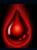
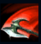
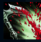
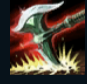
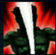

Darius
| Darius The Hand of Noxus | |
|---|---|
| Release date | 23.05.2012 |
| Class | Juggernaut |
| Positions | Top |
| Resource | Mana |
| Range type | Melee |
| Adaptive type | Physical |
| Base statistics | |||
| Health | 582 – 2282 | Mana | 263 – 1240.5 |
| Health regen. | 10 – 26.15 |
Mana regen. | 6.6 – 12.55 |
| Armor | 39 – 107 | Attack damage | 64 – 149 |
| Magic resist. | 32 – 53.25 | Crit. damage | 175% |
| Move. speed | 340 | Attack range | 125 |
Nu există un simbol mai potrivit al măreției noxiene decât Darius, cel mai temut și mai călit în luptă dintre toți comandanții națiunii. Devenit mâna dreaptă a Noxusului în ciuda originilor sale umile, Darius taie și spânzură printre inamicii imperiului, indiferent dacă aceștia sunt noxieni sau nu. Cei care se ridică împotriva conducătorului Legiunii Trifariene știu că Darius nu se îndoiește niciodată de dreptatea cauzei sale și că nu ezită niciodată când ridică toporul, așa că n-ar trebui să se aștepte la compasiune din partea lui. |  |
HEMORAGIE Atacurile și abilitățile lui Darius care provoacă daune îi fac pe inamici să sângereze, provocându-le daune fizice de-a lungul a 5 secunde, efect care se cumulează de până la 5 ori. |
||
|---|---|---|---|---|
 |
DECIMARE Darius își rotește securea într-un cerc larg. Inamicii loviți de tăiș suferă mai multe daune decât cei loviți de mâner. Darius se vindecă în funcție de numărul de campioni și monștri mari loviți cu tăișul. |
|||
 |
LOVITURĂ PARALIZANTĂ Următorul atac al lui Darius lovește o arteră vitală a unui inamic. Cât timp ținta sângerează, aceasta are viteza de mișcare redusă. |
|||
|  |
REȚINERE Darius își ascute securea, astfel încât daunele sale fizice ignoră pasiv o parte din armura țintei. Atunci când abilitatea este activată, Darius își agață inamicii și îi trage spre el. |
|||
 |
GHILOTINA NOXIANĂ Darius sare la un campion inamic și îi aplică o lovitură fatală, provocându-i daune reale. Daunele cresc pentru fiecare cumul de ''Hemoragie'' al țintei. Dacă ''Ghilotina noxiană'' își ucide ținta, timpul său de reactivare se resetează pentru scurt timp. |